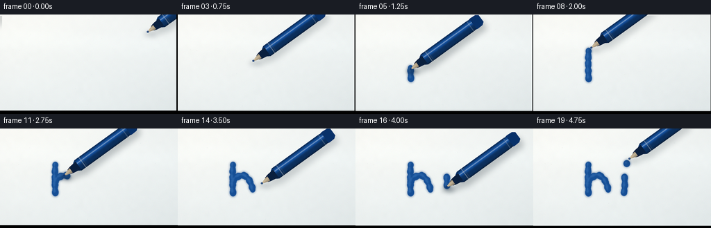
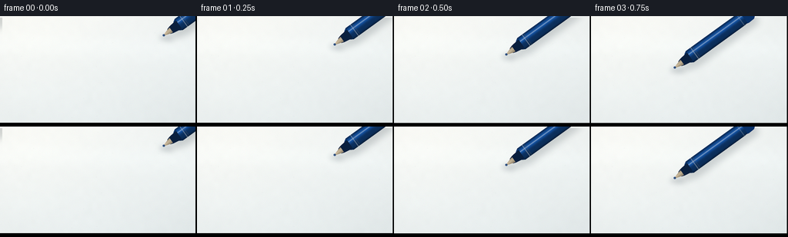
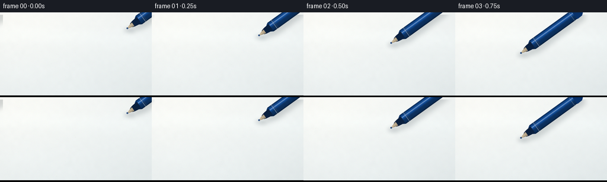
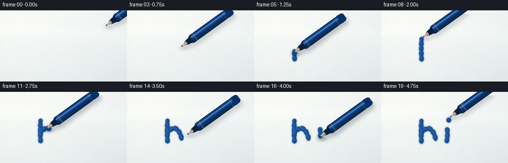
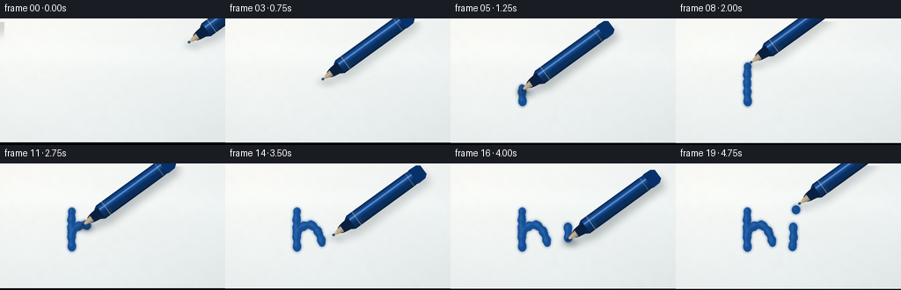
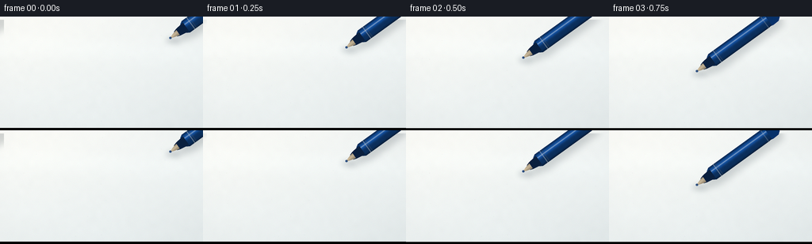
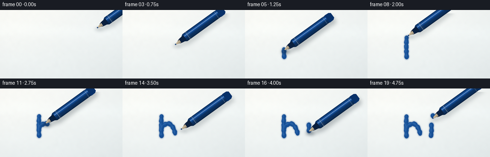

CODING AGENTS AS PIXEL WORLD MODELS
traex/DeepSeek-V4.1-Flash · phygen_032
点击播放 · 原生 RGB 像素
逐轮保存的候选
回放视频、检查图与代码变化。
每份候选均可单独播放。实际图片检查记录在下方工具轨迹中。
候选 01播放与检查图
点击播放 · 原生 RGB 像素

展开代码变化
--- 上一保存版本
+++ 本次保存版本
@@ -0,0 +1,378 @@
+from pathlib import Path
+import math
+
+import numpy as np
+from PIL import Image, ImageChops, ImageDraw, ImageFilter
+
+from artifact_io import save
+
+
+CASE_DIR = Path(__file__).resolve().parent
+W, H = 256, 144
+SS = 4
+SW, SH = W * SS, H * SS
+FPS = 4.0
+N_FRAMES = 20
+
+
+def smoothstep(a, b, x):
+ t = np.clip((x - a) / (b - a), 0.0, 1.0)
+ return t * t * (3.0 - 2.0 * t)
+
+
+def make_board():
+ yy, xx = np.mgrid[0:SH, 0:SW].astype(np.float32)
+ nx, ny = xx / SW, yy / SH
+
+ # A bright, slightly cool whiteboard with soft studio reflections.
+ top = np.array([248.0, 249.0, 246.0], dtype=np.float32)
+ bottom = np.array([228.0, 236.0, 237.0], dtype=np.float32)
+ ramp = (0.62 * ny + 0.38 * nx)[..., None]
+ board = top * (1.0 - ramp) + bottom * ramp
+
+ warm_pool = np.exp(-(((nx - 0.17) / 0.42) ** 2 + ((ny - 0.08) / 0.50) ** 2))
+ board += warm_pool[..., None] * np.array([4.0, 3.0, 1.0], dtype=np.float32)
+
+ band_y = 0.31 + 0.075 * (nx - 0.5)
+ sheen = np.exp(-((ny - band_y) / 0.105) ** 2)
+ board += sheen[..., None] * np.array([3.2, 3.8, 4.0], dtype=np.float32)
+
+ corner = np.exp(-(((nx - 0.91) / 0.30) ** 2 + ((ny - 0.91) / 0.31) ** 2))
+ board -= corner[..., None] * np.array([2.0, 2.6, 2.8], dtype=np.float32)
+
+ # Very fine surface tooth, plus faint, broad eraser haze.
+ rng = np.random.default_rng(37)
+ coarse = rng.normal(0.0, 1.0, (24, 42)).astype(np.float32)
+ coarse = np.asarray(
+ Image.fromarray(coarse, mode="F").resize((SW, SH), Image.Resampling.BICUBIC)
+ )
+ fine = rng.normal(0.0, 0.62, (SH, SW)).astype(np.float32)
+ board += (coarse * 0.55 + fine)[..., None]
+
+ smear = np.exp(-(((nx - 0.14) / 0.20) ** 2 + ((ny - 0.72) / 0.08) ** 2))
+ board += smear[..., None] * np.array([1.1, 1.4, 1.5], dtype=np.float32)
+
+ radial = np.sqrt((nx - 0.48) ** 2 + (ny - 0.47) ** 2)
+ board *= (1.0 - 0.018 * smoothstep(0.35, 0.83, radial))[..., None]
+
+ # A few nearly invisible specks keep the surface from feeling synthetic.
+ specks = Image.new("RGBA", (SW, SH), (0, 0, 0, 0))
+ draw = ImageDraw.Draw(specks)
+ speck_rng = np.random.default_rng(4)
+ for _ in range(34):
+ x = int(speck_rng.uniform(12, SW - 12))
+ y = int(speck_rng.uniform(10, SH - 10))
+ r = int(speck_rng.integers(1, 3))
+ a = int(speck_rng.integers(4, 10))
+ draw.ellipse((x - r, y - r, x + r, y + r), fill=(72, 86, 87, a))
+
+ base = Image.fromarray(np.uint8(np.clip(board, 0, 255)), "RGB").convert("RGBA")
+ return Image.alpha_composite(base, specks)
+
+
+def quadratic(p0, p1, p2, steps=150):
+ t = np.linspace(0.0, 1.0, steps, dtype=np.float32)[:, None]
+ pts = (1 - t) ** 2 * p0 + 2 * (1 - t) * t * p1 + t**2 * p2
+ return [tuple(p) for p in pts]
+
+
+def path_length(points):
+ pts = np.asarray(points, dtype=np.float32)
+ return float(np.sum(np.linalg.norm(np.diff(pts, axis=0), axis=1)))
+
+
+def partial_path(points, progress):
+ if progress <= 0:
+ return [points[0]]
+ target = path_length(points) * min(progress, 1.0)
+ out = [points[0]]
+ walked = 0.0
+ for a, b in zip(points[:-1], points[1:]):
+ seg = math.dist(a, b)
+ if walked + seg >= target:
+ f = (target - walked) / max(seg, 1e-6)
+ out.append((a[0] + (b[0] - a[0]) * f, a[1] + (b[1] - a[1]) * f))
+ return out
+ out.append(b)
+ walked += seg
+ return out
+
+
+H_STEM = quadratic((82.0, 97.0), (80.9, 77.0), (82.0, 57.0))
+H_ARCH_A = quadratic((82.0, 82.0), (87.2, 72.0), (98.0, 73.0))
+H_ARCH_B = quadratic((98.0, 73.0), (107.2, 78.0), (110.0, 94.0))
+H_ARCH = H_ARCH_A + H_ARCH_B[1:]
+I_STEM = quadratic((133.0, 76.0), (134.0, 86.5), (132.0, 98.0))
+DOT = (136.0, 56.0)
+
+
+def brush_mask(points, width, closed_dot=False):
+ mask = Image.new("L", (SW, SH), 0)
+ draw = ImageDraw.Draw(mask)
+ if closed_dot:
+ x, y = points[0]
+ r = width * 0.57
+ draw.ellipse(
+ ((x - r) * SS, (y - r * 1.05) * SS, (x + r) * SS, (y + r * 1.05) * SS),
+ fill=255,
+ )
+ return mask
+
+ pts = np.asarray(points, dtype=np.float32)
+ if len(pts) == 1:
+ pts = np.vstack([pts, pts + np.array([0.05, 0.0], dtype=np.float32)])
+
+ distances = np.r_[0.0, np.cumsum(np.linalg.norm(np.diff(pts, axis=0), axis=1))]
+ total = max(float(distances[-1]), 1e-6)
+ for i, ((x, y), dist) in enumerate(zip(pts, distances)):
+ tangent = pts[min(i + 1, len(pts) - 1)] - pts[max(i - 1, 0)]
+ angle = math.atan2(float(tangent[1]), float(tangent[0]))
+ wobble = 0.62 * math.sin(dist * 0.63 + 0.7) + 0.26 * math.sin(dist * 1.71)
+ r = width * 0.5 + wobble
+ # A slightly flattened circular stamp approximates the chiseled marker nib.
+ dx = math.cos(angle) * r * 0.22
+ dy = math.sin(angle) * r * 0.22
+ draw.ellipse(
+ ((x - r - dx) * SS, (y - r * 1.08 - dy) * SS,
+ (x + r - dx) * SS, (y + r * 1.08 - dy) * SS),
+ fill=255,
+ )
+ return mask
+
+
+def ink_layer(strokes, dot_progress):
+ halo = Image.new("L", (SW, SH), 0)
+ core = Image.new("L", (SW, SH), 0)
+ sheen = Image.new("L", (SW, SH), 0)
+
+ for points, progress in strokes:
+ if progress <= 0:
+ continue
+ part = partial_path(points, progress)
+ halo = ImageChops.lighter(halo, brush_mask(part, 9.7))
+ core = ImageChops.lighter(core, brush_mask(part, 7.7))
+ shifted = [(x - 1.25, y - 1.35) for x, y in part]
+ sheen = ImageChops.lighter(sheen, brush_mask(shifted, 2.0))
+
+ if dot_progress > 0:
+ dot = [(DOT[0], DOT[1] + (1.0 - dot_progress) * 1.2)]
+ halo = ImageChops.lighter(halo, brush_mask(dot, 10.0 * dot_progress, True))
+ core = ImageChops.lighter(core, brush_mask(dot, 8.0 * dot_progress, True))
+ sheen = ImageChops.lighter(
+ sheen, brush_mask([(DOT[0] - 1.2, DOT[1] - 1.4)], 2.2 * dot_progress, True)
+ )
+
+ halo = halo.filter(ImageFilter.GaussianBlur(1.25 * SS))
+ core = core.filter(ImageFilter.GaussianBlur(0.28 * SS))
+ sheen = sheen.filter(ImageFilter.GaussianBlur(0.65 * SS))
+
+ halo_rgba = Image.new("RGBA", (SW, SH), (8, 53, 118, 0))
+ halo_rgba.putalpha(halo.point(lambda v: int(v * 0.34)))
+ core_rgba = Image.new("RGBA", (SW, SH), (11, 69, 143, 0))
+ core_rgba.putalpha(core.point(lambda v: int(v * 0.94)))
+ sheen_rgba = Image.new("RGBA", (SW, SH), (86, 145, 210, 0))
+ sheen_rgba.putalpha(sheen.point(lambda v: int(v * 0.28)))
+
+ layer = Image.alpha_composite(halo_rgba, core_rgba)
+ return Image.alpha_composite(layer, sheen_rgba)
+
+
+def polygon_for_axis(point, axis, pairs):
+ px, py = point
+ ux, uy = axis
+ vx, vy = -uy, ux
+ left = []
+ right = []
+ for u, width in pairs:
+ cx = px + ux * u
+ cy = py + uy * u
+ left.append(((cx + vx * width * 0.5) * SS, (cy + vy * width * 0.5) * SS))
+ right.append(((cx - vx * width * 0.5) * SS, (cy - vy * width * 0.5) * SS))
+ return left + right[::-1]
+
+
+def local_coords(point, axis):
+ yy, xx = np.mgrid[0:SH, 0:SW].astype(np.float32)
+ ux, uy = axis
+ dx = (xx / SS - point[0]).astype(np.float32)
+ dy = (yy / SS - point[1]).astype(np.float32)
+ return dx * ux + dy * uy, dx * -uy + dy * ux
+
+
+def marker_layers(point, contact):
+ axis = (math.cos(math.radians(-36.0)), math.sin(math.radians(-36.0)))
+
+ barrel_mask = Image.new("L", (SW, SH), 0)
+ collar_mask = Image.new("L", (SW, SH), 0)
+ nib_mask = Image.new("L", (SW, SH), 0)
+ cap_mask = Image.new("L", (SW, SH), 0)
+ silhouette = Image.new("L", (SW, SH), 0)
+ draw = ImageDraw.Draw(barrel_mask)
+ draw_collar = ImageDraw.Draw(collar_mask)
+ draw_nib = ImageDraw.Draw(nib_mask)
+ draw_cap = ImageDraw.Draw(cap_mask)
+
+ barrel = polygon_for_axis(point, axis, [(20, 13.0), (24, 17.8), (106, 17.8), (110, 16.2)])
+ collar = polygon_for_axis(point, axis, [(8, 7.0), (12, 9.8), (21, 12.7), (24, 13.0)])
+ nib = polygon_for_axis(point, axis, [(0.2, 1.2), (4.0, 3.6), (8.3, 6.4), (11.8, 7.4)])
+ cap = polygon_for_axis(point, axis, [(106, 16.2), (112, 18.5), (120, 17.8), (124, 12.0)])
+
+ draw.polygon(barrel, fill=255)
+ draw_collar.polygon(collar, fill=255)
+ draw_nib.polygon(nib, fill=255)
+ draw_cap.polygon(cap, fill=255)
+
+ for mask in (barrel_mask, collar_mask, nib_mask, cap_mask):
+ silhouette = ImageChops.lighter(silhouette, mask)
+
+ u, v = local_coords(point, axis)
+ barrel_arr = np.asarray(barrel_mask, dtype=np.float32) / 255.0
+ t = np.clip(v / 9.0, -1.0, 1.0)
+ light = (
+ 0.52
+ + 0.47 * np.exp(-((t + 0.34) / 0.35) ** 2)
+ + 0.15 * np.exp(-((t + 0.67) / 0.12) ** 2)
+ - 0.18 * smoothstep(0.55, 1.0, t)
+ )
+ body_base = np.array([17.0, 76.0, 155.0], dtype=np.float32)
+ body_rgb = body_base[None, None, :] * light[..., None]
+ body_rgb += np.array([3.0, 6.0, 8.0], dtype=np.float32)
+
+ # Satin highlight and thin machined bands.
+ spec = np.exp(-((t + 0.39) / 0.085) ** 2)
+ body_rgb = body_rgb * (1.0 - 0.44 * spec[..., None]) + 238.0 * 0.44 * spec[..., None]
+ for band_u, color, strength in ((31.5, 193.0, 0.55), (34.2, 92.0, 0.32), (105.0, 178.0, 0.35)):
+ band = np.exp(-((u - band_u) / 0.55) ** 2) * barrel_arr
+ body_rgb = body_rgb * (1.0 - strength * band[..., None]) + color * strength * band[..., None]
+
+ # Low-contrast plastic grain.
+ grain = np.sin(u * 2.7 + v * 1.1) * 0.018 + np.sin(u * 0.73) * 0.012
+ body_rgb *= (1.0 + grain)[..., None]
+ barrel_rgba = Image.fromarray(np.uint8(np.clip(body_rgb, 0, 255)), "RGB").convert("RGBA")
+ barrel_rgba.putalpha(barrel_mask)
+
+ collar_rgba = Image.new("RGBA", (SW, SH), (10, 31, 61, 0))
+ collar_rgba.putalpha(collar_mask)
+ cap_rgba = Image.new("RGBA", (SW, SH), (8, 48, 103, 0))
+ cap_rgba.putalpha(cap_mask)
+
+ nib_u = np.clip((u - 0.0) / 11.5, 0.0, 1.0)
+ nib_t = np.clip(v / 3.8, -1.0, 1.0)
+ nib_light = 0.69 + 0.20 * np.exp(-((nib_t + 0.25) / 0.5) ** 2)
+ nib_base = np.stack(
+ [
+ 224.0 - 20.0 * nib_u,
+ 203.0 - 16.0 * nib_u,
+ 169.0 - 11.0 * nib_u,
+ ],
+ axis=-1,
+ )
+ nib_rgb = nib_base * nib_light[..., None]
+ nib_rgb += np.array([7.0, 6.0, 4.0], dtype=np.float32)
+ nib_rgba = Image.fromarray(np.uint8(np.clip(nib_rgb, 0, 255)), "RGB").convert("RGBA")
+ nib_rgba.putalpha(nib_mask)
+
+ marker = Image.new("RGBA", (SW, SH), (0, 0, 0, 0))
+ marker = Image.alpha_composite(marker, cap_rgba)
+ marker = Image.alpha_composite(marker, barrel_rgba)
+ marker = Image.alpha_composite(marker, collar_rgba)
+ marker = Image.alpha_composite(marker, nib_rgba)
+
+ # Dark blue ink stain at the very tip.
+ tip = Image.new("RGBA", (SW, SH), (0, 0, 0, 0))
+ tip_draw = ImageDraw.Draw(tip)
+ tx, ty = point
+ tip_draw.ellipse(
+ ((tx - 1.7) * SS, (ty - 1.3) * SS, (tx + 1.3) * SS, (ty + 1.4) * SS),
+ fill=(10, 49, 108, 205),
+ )
+ marker = Image.alpha_composite(marker, tip)
+
+ # Soft cast shadow follows the full marker and varies with nib pressure.
+ shadow_mask = silhouette.filter(ImageFilter.GaussianBlur(4.0 * SS))
+ shadow = Image.new("RGBA", (SW, SH), (31, 42, 50, 0))
+ shadow.putalpha(shadow_mask.point(lambda value: int(value * (0.19 + 0.08 * contact))))
+ shadow = ImageChops.offset(shadow, int(5.0 * SS), int(7.0 * SS))
+
+ contact_mask = Image.new("L", (SW, SH), 0)
+ contact_draw = ImageDraw.Draw(contact_mask)
+ cx, cy = point[0] + 2.4, point[1] + 3.0
+ contact_draw.ellipse(
+ ((cx - 8.5) * SS, (cy - 4.0) * SS, (cx + 8.5) * SS, (cy + 4.0) * SS),
+ fill=255,
+ )
+ contact_mask = contact_mask.filter(ImageFilter.GaussianBlur(3.3 * SS))
+ contact_rgba = Image.new("RGBA", (SW, SH), (24, 39, 51, 0))
+ contact_rgba.putalpha(contact_mask.point(lambda value: int(value * (0.18 + 0.31 * contact))))
+ shadow = Image.alpha_composite(shadow, contact_rgba)
+
+ return shadow, marker
+
+
+FRAME_STATE = [
+ ((215.0, 30.0), 0.0, 0.0, 0.0, 0.0),
+ ((181.0, 42.0), 0.0, 0.0, 0.0, 0.0),
+ ((148.0, 55.0), 0.0, 0.0, 0.0, 0.0),
+ ((111.0, 72.0), 0.0, 0.0, 0.0, 0.0),
+ ((82.0, 97.0), 1.0, 0.02, 0.0, 0.0),
+ ((82.0, 84.0), 1.0, 0.40, 0.0, 0.0),
+ ((82.0, 70.0), 1.0, 0.74, 0.0, 0.0),
+ ((82.0, 57.0), 0.9, 1.00, 0.0, 0.0),
+ ((86.0, 53.0), 0.0, 1.00, 0.0, 0.0),
+ ((82.0, 82.0), 1.0, 1.00, 0.015, 0.0),
+ ((88.0, 74.0), 1.0, 1.00, 0.24, 0.0),
+ ((95.0, 72.5), 1.0, 1.00, 0.49, 0.0),
+ ((103.0, 75.0), 1.0, 1.00, 0.73, 0.0),
+ ((110.0, 94.0), 0.9, 1.00, 1.00, 0.0),
+ ((123.0, 84.0), 0.0, 1.00, 1.00, 0.0),
+ ((133.0, 76.0), 1.0, 1.00, 1.00, 0.04),
+ ((133.0, 89.0), 1.0, 1.00, 1.00, 0.55),
+ ((132.0, 98.0), 0.9, 1.00, 1.00, 1.00),
+ ((136.0, 56.0), 1.0, 1.00, 1.00, 1.00),
+ ((140.0, 49.0), 0.0, 1.00, 1.00, 1.00),
+]
+
+
+def render_frame(index):
+ board = make_board()
+ point, contact, hstem, harch, istem = FRAME_STATE[index]
+ dot = 1.0 if index >= 18 else 0.0
+ strokes = [(H_STEM, hstem), (H_ARCH, harch), (I_STEM, istem)]
+ ink = ink_layer(strokes, dot)
+ shadow, marker = marker_layers(point, contact)
+
+ scene = Image.alpha_composite(board, ink)
+ scene = Image.alpha_composite(scene, shadow)
+ scene = Image.alpha_composite(scene, marker)
+
+ # A restrained camera push-in keeps the close-up alive without distracting.
+ t = index / (N_FRAMES - 1)
+ zoom = 1.0 + 0.022 * t
+ cx, cy = 128.0 * SS, 75.0 * SS
+ tx = cx - (SW * 0.5) / zoom - 0.5 * SS * t
+ ty = cy - (SH * 0.5) / zoom - 0.2 * SS * t
+ scene = scene.transform(
+ (SW, SH),
+ Image.Transform.AFFINE,
+ (1.0 / zoom, 0.0, tx, 0.0, 1.0 / zoom, ty),
+ resample=Image.Resampling.BICUBIC,
+ )
+
+ frame = scene.convert("RGB").resize((W, H), Image.Resampling.LANCZOS)
+ arr = np.asarray(frame).astype(np.float32)
+
+ # Gentle highlight rolloff and a tiny amount of final grain.
+ arr = 255.0 - 255.0 * np.power(np.clip(1.0 - arr / 255.0, 0.0, 1.0), 1.035)
+ rng = np.random.default_rng(900 + index)
+ arr += rng.normal(0.0, 0.42, arr.shape).astype(np.float32)
+ return np.uint8(np.clip(arr, 0, 255))
+
+
+def main():
+ frames = np.stack([render_frame(i) for i in range(N_FRAMES)])
+ save(frames, CASE_DIR)
+ print(f"wrote {N_FRAMES} frames to {CASE_DIR}")
+
+
+if __name__ == "__main__":
+ main()
候选 02播放与检查图
点击播放 · 原生 RGB 像素


展开代码变化
--- 上一保存版本
+++ 本次保存版本
@@ -351,12 +351,15 @@
cx, cy = 128.0 * SS, 75.0 * SS
tx = cx - (SW * 0.5) / zoom - 0.5 * SS * t
ty = cy - (SH * 0.5) / zoom - 0.2 * SS * t
+ # Render a small overscan and crop it away so bicubic sampling never
+ # exposes a black edge at the last row or column.
scene = scene.transform(
- (SW, SH),
+ (SW + 2 * SS, SH + 2 * SS),
Image.Transform.AFFINE,
- (1.0 / zoom, 0.0, tx, 0.0, 1.0 / zoom, ty),
+ (1.0 / zoom, 0.0, tx + SS, 0.0, 1.0 / zoom, ty + SS),
resample=Image.Resampling.BICUBIC,
)
+ scene = scene.crop((SS, SS, SS + SW, SS + SH))
frame = scene.convert("RGB").resize((W, H), Image.Resampling.LANCZOS)
arr = np.asarray(frame).astype(np.float32)
候选 03播放与检查图
点击播放 · 原生 RGB 像素

展开代码变化
--- 上一保存版本
+++ 本次保存版本
@@ -349,17 +349,12 @@
t = index / (N_FRAMES - 1)
zoom = 1.0 + 0.022 * t
cx, cy = 128.0 * SS, 75.0 * SS
- tx = cx - (SW * 0.5) / zoom - 0.5 * SS * t
- ty = cy - (SH * 0.5) / zoom - 0.2 * SS * t
- # Render a small overscan and crop it away so bicubic sampling never
- # exposes a black edge at the last row or column.
- scene = scene.transform(
- (SW + 2 * SS, SH + 2 * SS),
- Image.Transform.AFFINE,
- (1.0 / zoom, 0.0, tx + SS, 0.0, 1.0 / zoom, ty + SS),
- resample=Image.Resampling.BICUBIC,
- )
- scene = scene.crop((SS, SS, SS + SW, SS + SH))
+ crop_w, crop_h = SW / zoom, SH / zoom
+ left = cx - crop_w * 0.5 - 0.5 * SS * t
+ top = cy - crop_h * 0.5 - 0.2 * SS * t
+ scene = scene.crop((left, top, left + crop_w, top + crop_h)).resize(
+ (SW, SH), Image.Resampling.BICUBIC
+ )
frame = scene.convert("RGB").resize((W, H), Image.Resampling.LANCZOS)
arr = np.asarray(frame).astype(np.float32)
候选 04播放与检查图
点击播放 · 原生 RGB 像素

展开代码变化
--- 上一保存版本
+++ 本次保存版本
@@ -351,7 +351,7 @@
cx, cy = 128.0 * SS, 75.0 * SS
crop_w, crop_h = SW / zoom, SH / zoom
left = cx - crop_w * 0.5 - 0.5 * SS * t
- top = cy - crop_h * 0.5 - 0.2 * SS * t
+ top = 0.0
scene = scene.crop((left, top, left + crop_w, top + crop_h)).resize(
(SW, SH), Image.Resampling.BICUBIC
)
候选 05播放与检查图

候选 06播放与检查图
点击播放 · 原生 RGB 像素
展开代码变化
--- 上一保存版本
+++ 本次保存版本
@@ -350,7 +350,7 @@
zoom = 1.0 + 0.022 * t
cx, cy = 128.0 * SS, 75.0 * SS
crop_w, crop_h = SW / zoom, SH / zoom
- left = cx - crop_w * 0.5 - 0.5 * SS * t
+ left = min(max(cx - crop_w * 0.5 - 0.5 * SS * t, 0.0), SW - crop_w)
top = 0.0
scene = scene.crop((left, top, left + crop_w, top + crop_h)).resize(
(SW, SH), Image.Resampling.BICUBIC
候选 07播放与检查图
点击播放 · 原生 RGB 像素

展开代码变化
--- 上一保存版本
+++ 本次保存版本
@@ -292,7 +292,9 @@
shadow_mask = silhouette.filter(ImageFilter.GaussianBlur(4.0 * SS))
shadow = Image.new("RGBA", (SW, SH), (31, 42, 50, 0))
shadow.putalpha(shadow_mask.point(lambda value: int(value * (0.19 + 0.08 * contact))))
- shadow = ImageChops.offset(shadow, int(5.0 * SS), int(7.0 * SS))
+ shifted_shadow = Image.new("RGBA", (SW, SH), (31, 42, 50, 0))
+ shifted_shadow.paste(shadow, (int(5.0 * SS), int(7.0 * SS)))
+ shadow = shifted_shadow
contact_mask = Image.new("L", (SW, SH), 0)
contact_draw = ImageDraw.Draw(contact_mask)
候选 08播放与检查图
点击播放 · 原生 RGB 像素

展开代码变化
--- 上一保存版本
+++ 本次保存版本
@@ -312,9 +312,9 @@
FRAME_STATE = [
- ((215.0, 30.0), 0.0, 0.0, 0.0, 0.0),
- ((181.0, 42.0), 0.0, 0.0, 0.0, 0.0),
- ((148.0, 55.0), 0.0, 0.0, 0.0, 0.0),
+ ((204.0, 37.0), 0.0, 0.0, 0.0, 0.0),
+ ((176.0, 46.0), 0.0, 0.0, 0.0, 0.0),
+ ((147.0, 56.0), 0.0, 0.0, 0.0, 0.0),
((111.0, 72.0), 0.0, 0.0, 0.0, 0.0),
((82.0, 97.0), 1.0, 0.02, 0.0, 0.0),
((82.0, 84.0), 1.0, 0.40, 0.0, 0.0),
@@ -331,7 +331,7 @@
((133.0, 89.0), 1.0, 1.00, 1.00, 0.55),
((132.0, 98.0), 0.9, 1.00, 1.00, 1.00),
((136.0, 56.0), 1.0, 1.00, 1.00, 1.00),
- ((140.0, 49.0), 0.0, 1.00, 1.00, 1.00),
+ ((136.0, 61.0), 0.0, 1.00, 1.00, 1.00),
]
候选 09播放与检查图

可观测工具轨迹
实际执行的命令与返回图片。
命令 1exit 0
/bin/bash -c "pwd && rg --files -g 'prompt.txt' -g 'GENERATION_RULES.md' -g 'task_spec.json' -g '"'!**/.git/**'"'"
命令 2exit 0
/bin/bash -c 'ls -la'
命令 3exit 0
/bin/bash -c 'cat prompt.txt'
命令 4exit 0
/bin/bash -c 'cat GENERATION_RULES.md'
命令 5exit 0
/bin/bash -c 'cat task_spec.json'
命令 6exit 0
/bin/bash -c "sed -n '1,240p' artifact_io.py"
命令 7exit 0
/bin/bash -c "python - <<'PY'
from PIL import Image, ImageDraw
import math
W,H=100,200
im=Image.new('L',(W,H),0)
d=ImageDraw.Draw(im)
d.ellipse((45,145,55,155),fill=255)
for a in [0,30,90,-30]:
r=im.rotate(a,expand=True)
import numpy as np
ys,xs=np.where(np.array(r)>0)
print(a, r.size, (xs.mean(),ys.mean()))
PY"命令 8exit 0
/bin/bash -c "python - <<'PY'
from PIL import Image
import numpy as np
for a in [30,-30]:
im=Image.new('L',(200,200),0); im.putpixel((100,50),255)
out=im.rotate(a,resample=Image.Resampling.NEAREST)
y,x=np.where(np.array(out)>0)
print(a,x,y)
PY"命令 9exit 0
/bin/bash -c "python - <<'PY'
from PIL import Image
import numpy as np
for a in [30,90]:
im=Image.new('L',(200,200),0); im.putpixel((100,150),255)
out=im.rotate(a,resample=Image.Resampling.NEAREST)
y,x=np.where(np.array(out)>0)
print(a,x,y)
PY"命令 10exit 0
/bin/bash -c 'fc-list | head -20'
命令 11exit 0
/bin/bash -c "python - <<'PY'
from PIL import ImageFont
for p in ['/usr/share/fonts/truetype/dejavu/DejaVuSans-Bold.ttf','/usr/share/fonts/truetype/dejavu/DejaVuSansCondensed-Bold.ttf','/usr/share/fonts/truetype/dejavu/DejaVuSerif-Bold.ttf']:
f=ImageFont.truetype(p,90)
print(p,f.getbbox('hi'),f.getlength('hi'))
PY"命令 12exit 0
/bin/bash -c 'python generate.py'
命令 13exit 0
/bin/bash -c 'ls -lh frames/*.png pixels.npz index.html inspection.png transition_check.png | tail -8'
命令 14exit 0
/bin/bash -c "python - <<'PY'
from PIL import Image
import numpy as np
from pathlib import Path
frames=sorted(Path('frames').glob('*.png'))
for i in [0,3,4,8,9,13,14,17,18,19]:
a=np.asarray(Image.open(frames[i]))
print(i, tuple(a[0,0]), tuple(a[-1,-1]), a.min(), a.max(), round(float(a.std()),2))
PY"命令 15exit 0
/bin/bash -c "python - <<'PY'
import numpy as np
from PIL import Image
from pathlib import Path
frames=[np.asarray(Image.open(p)).astype(float) for p in sorted(Path('frames').glob('*.png'))]
for i in range(1,len(frames)):
print(f'{i-1:02d}->{i:02d} MAE={np.abs(frames[i]-frames[i-1]).mean():.3f}')
PY"命令 16exit 0
/bin/bash -c "python - <<'PY'
import numpy as np
from PIL import Image
from pathlib import Path
for p in sorted(Path('frames').glob('*.png')):
a=np.asarray(Image.open(p))
print(p.stem, tuple(np.median(a.reshape(-1,3),axis=0).astype(int)), tuple(np.percentile(a.reshape(-1,3),95,axis=0).astype(int)))
PY"命令 17exit 0
/bin/bash -c "python - <<'PY'
from PIL import Image
import numpy as np
a=np.asarray(Image.open('frames/19.png'))
print(a.shape)
for y,x in [(0,0),(143,255),(143,254),(142,255),(100,250),(0,255),(143,0)]: print((x,y),a[y,x])
PY"命令 18exit 0
/bin/bash -c "python - <<'PY'
from PIL import Image
im=Image.open('frames/19.png')
print(im.getpixel((255,143)), im.getpixel((0,143)), im.getpixel((255,142)), im.getpixel((254,143)))
im2=im.resize((512,288),Image.Resampling.NEAREST); im2.save('.tmp/zoom19.png')
PY"命令 19exit 0
/bin/bash -c 'python generate.py'
命令 20exit 0
/bin/bash -c "python - <<'PY'
import json, wave
from pathlib import Path
import numpy as np
from PIL import Image
spec=json.loads(Path('task_spec.json').read_text())
frames=sorted(Path('frames').glob('*.png'))
arr=np.stack([np.asarray(Image.open(p)) for p in frames])
print('frames',arr.shape,'dtype',arr.dtype)
print('expected',(spec['frames'],spec['height'],spec['width'],3))
print('edges min', int(arr[:,0,:].min()), int(arr[:,-1,:].min()), int(arr[:,:,0].min()), int(arr[:,:,-1].min()))
print('finite/range', int(arr.min()), int(arr.max()))
p=np.load('pixels.npz')['pixels']
print('packed',p.shape,p.dtype)
print('html bytes',Path('index.html').stat().st_size)
print('audio exists',Path('audio.wav').exists())
PY"命令 21exit 0
/bin/bash -c "python - <<'PY'
import numpy as np
from PIL import Image
for i in [0,19]:
a=np.asarray(Image.open(f'frames/{i:02d}.png'))
print('frame',i)
for name,v in [('top',a[0]),('bottom',a[-1]),('left',a[:,0]),('right',a[:,-1])]:
q=np.where(v.max(axis=-1)<20)[0]
print(name,'dark count',len(q),'loc',q[:10], 'min',v.min())
PY"命令 22exit 0
/bin/bash -c "python - <<'PY'
from PIL import Image
import numpy as np
for i in range(20):
im=Image.open(f'frames/{i:02d}.png')
print(i, im.getpixel((255,143)),im.getpixel((0,143)),im.getpixel((255,142)),im.getpixel((0,142)),im.getpixel((128,143)))
PY"命令 23exit 0
/bin/bash -c "python - <<'PY'
import generate
s=generate.make_board().convert('RGB')
print(s.getpixel((1023,575)),s.getpixel((0,0)))
scene=s.convert('RGBA')
t=scene.transform((1032,584),generate.Image.Transform.AFFINE,(1,0,4,0,1,4),resample=generate.Image.Resampling.BICUBIC)
t=t.crop((4,4,1028,580)).resize((256,144),generate.Image.Resampling.LANCZOS)
print(t.getpixel((255,143)),t.getpixel((0,143)))
PY"命令 24exit 0
/bin/bash -c "python - <<'PY'
import generate
from PIL import Image
s=generate.make_board().convert('RGBA')
print(s.getpixel((1023,575)), s.getpixel((1023,574)), s.getpixel((1022,575)))
t=s.transform((1032,584),Image.Transform.AFFINE,(1,0,4,0,1,4),resample=Image.Resampling.BICUBIC)
print(t.size,t.getpixel((1027,579)),t.getpixel((1023,575)),t.getpixel((1027,575)),t.getpixel((1023,579)))
PY"命令 25exit 0
/bin/bash -c "python - <<'PY'
from PIL import Image
import generate
s=generate.make_board().convert('RGBA')
# make opaque RGB? affine likely premult issue due expand sampling
for a in [s,s.convert('RGB').convert('RGBA')]:
t=a.transform((1032,584),Image.Transform.AFFINE,(1,0,4,0,1,4),resample=Image.Resampling.BICUBIC)
print(a.mode,t.getpixel((1027,579)),t.getpixel((1023,575)))
# small white
im=Image.new('RGBA',(100,100),(240,240,240,255))
t=im.transform((110,110),Image.Transform.AFFINE,(1,0,4,0,1,4),resample=Image.Resampling.BICUBIC)
print(t.getpixel((105,105)),t.getpixel((5,5)))
PY"命令 26exit 0
/bin/bash -c 'python generate.py'
命令 27exit 0
/bin/bash -c "python - <<'PY'
from PIL import Image
import numpy as np
for i in [0,19]:
a=np.asarray(Image.open(f'frames/{i:02d}.png'))
print(i,a[0,0],a[-1,-1],a[:,0].min(),a[:,-1].min(),a[0].min(),a[-1].min())
PY"命令 28exit 0
/bin/bash -c "python - <<'PY'
import generate
from PIL import Image
s=generate.make_board()
t=s.crop((0,0,1024,576)).resize((1024,576),Image.Resampling.BICUBIC)
print('direct',t.getpixel((1023,575)),t.getpixel((1023,574)))
print('orig',s.getpixel((1023,575)),s.getpixel((1023,574)))
print('half',s.resize((512,288),Image.Resampling.LANCZOS).getpixel((511,287)))
print('quarter',s.resize((256,144),Image.Resampling.LANCZOS).getpixel((255,143)))
PY"命令 29exit 1
/bin/bash -c "python - <<'PY'
import generate
from PIL import Image
import numpy as np
i=19
board=generate.make_board()
point,contact,hstem,harch,istem=generate.FRAME_STATE[i]
ink=generate.ink_layer([(generate.H_STEM,hstem),(generate.H_ARCH,harch),(generate.I_STEM,istem)],1.0)
shadow,marker=generate.marker_layers(point,contact)
scene=Image.alpha_composite(board,ink)
scene=Image.alpha_composite(scene,shadow)
scene=Image.alpha_composite(scene,marker)
t=i/19;zoom=1+.022*t
crop_w,crop_h=generate.SW/zoom,generate.SH/zoom
cx,cy=128*generate.SS,75*generate.SS
left=cx-crop_w*.5-.5*generate.SS*t
top=cy-crop_h*.5-.2*generate.SS*t
print('crop',left,top,left+crop_w,top+crop_h)
c=scene.crop((left,top,left+crop_w,top+crop_h))
print('corner pre',c.getpixel((1023,575)), c.getpixel((1022,574)))
r=c.resize((1024,576),Image.Resampling.BICUBIC)
print('corner post',r.getpixel((1023,575)),r.getpixel((1022,574)))
rgb=r.convert('RGB').resize((256,144),Image.Resampling.LANCZOS)
print('final',rgb.getpixel((255,143)),rgb.getpixel((254,142)))
PY"命令 30exit 0
/bin/bash -c "python - <<'PY'
import generate
from PIL import Image
import numpy as np
for i in [0,19]:
board=generate.make_board(); point,contact,hstem,harch,istem=generate.FRAME_STATE[i]
ink=generate.ink_layer([(generate.H_STEM,hstem),(generate.H_ARCH,harch),(generate.I_STEM,istem)],1.0)
shadow,marker=generate.marker_layers(point,contact)
scene=Image.alpha_composite(board,ink); scene=Image.alpha_composite(scene,shadow); scene=Image.alpha_composite(scene,marker)
t=i/19;zoom=1+.022*t;crop_w,crop_h=generate.SW/zoom,generate.SH/zoom;cx,cy=128*generate.SS,75*generate.SS
left=cx-crop_w*.5-.5*generate.SS*t;top=cy-crop_h*.5-.2*generate.SS*t
c=scene.crop((left,top,left+crop_w,top+crop_h))
r=c.resize((1024,576),Image.Resampling.BICUBIC).convert('RGB').resize((256,144),Image.Resampling.LANCZOS)
print(i,r.getpixel((255,143)),r.getpixel((254,142)),r.getpixel((255,142)))
PY"命令 31exit 1
/bin/bash -c "python - <<'PY' import generate from PIL import Image s=generate.make_board() # Check exact alpha at crop boundary for p in [(1010,580),(1010,581),(1009,581),(1009,580)]: print(p,s.getpixel(p)) PY"
命令 32exit 1
/bin/bash -c "python - <<'PY' import generate from PIL import Image s=generate.make_board() print(s.size) for p in [(1010,580),(1010,575),(1009,575),(1009,574),(1023,575)]: print(p,s.getpixel(p)) PY"
命令 33exit 0
/bin/bash -c "python - <<'PY' import generate from PIL import Image s=generate.make_board() print(s.size) for p in [(1023,575),(1022,575),(1023,574),(0,0)]: print(p,s.getpixel(p)) PY"
命令 34exit 0
/bin/bash -c "python - <<'PY'
import generate
from PIL import Image
s=generate.make_board().convert('RGB')
print('rgb',s.getpixel((1023,575)))
for rs in [Image.Resampling.BICUBIC,Image.Resampling.BILINEAR,Image.Resampling.LANCZOS,Image.Resampling.NEAREST]:
r=s.resize((256,144),rs)
print(rs,r.getpixel((255,143)),r.getpixel((254,142)))
PY"命令 35exit 0
/bin/bash -c "python - <<'PY'
import generate
from PIL import Image
s=generate.make_board().convert('RGB')
c=s.crop((9.02,17.4,1010.98,581.0))
print(c.size)
for size in [(1024,576),(1006,564),(1007,565),(1023,576)]:
r=c.resize(size,Image.Resampling.BICUBIC)
print(size,r.getpixel((r.width-1,r.height-1)))
PY"命令 36exit 0
/bin/bash -c "python - <<'PY'
import generate
from PIL import Image
s=generate.make_board().convert('RGB')
for box in [(0,0,1024,576),(9.02,17.4,1010.98,581.0),(9,17,1011,581),(9.02,17.4,1010.98,575.0),(9.02,17.4,1023.0,575.0)]:
c=s.crop(box); r=c.resize((1024,576),Image.Resampling.BICUBIC)
print(box,c.size,r.getpixel((1023,575)),c.getpixel((c.width-1,c.height-1)))
PY"命令 37exit 0
/bin/bash -c 'python generate.py'
命令 38exit 0
/bin/bash -c "python - <<'PY'
from PIL import Image
import numpy as np
from pathlib import Path
for p in sorted(Path('frames').glob('*.png')):
a=np.asarray(Image.open(p))
print(p.stem, int(a[0].min()), int(a[-1].min()), int(a[:,0].min()), int(a[:,-1].min()))
PY"命令 39exit 0
/bin/bash -c 'python generate.py'
命令 40exit 0
/bin/bash -c "python - <<'PY'
from PIL import Image
import numpy as np
from pathlib import Path
for p in sorted(Path('frames').glob('*.png')):
a=np.asarray(Image.open(p))
print(p.stem, int(a[0].min()), int(a[-1].min()), int(a[:,0].min()), int(a[:,-1].min()))
PY"命令 41exit 0
/bin/bash -c "python - <<'PY'
from PIL import Image
import numpy as np
for i in [0,1,2,6,7,8,10,11,12,15,18,19]:
a=np.asarray(Image.open(f'frames/{i:02d}.png'))
print(i,'right',a[:,-1].min(axis=0), 'left',a[:,0].min(axis=0),'top',a[0].min(axis=0))
PY"命令 42exit 0
/bin/bash -c "python - <<'PY'
from PIL import Image
for i in [0,19]: Image.open(f'frames/{i:02d}.png').resize((768,432),Image.Resampling.NEAREST).save(f'.tmp/edge_{i}.png')
PY"命令 43exit 0
/bin/bash -c 'python generate.py'
命令 44exit 0
/bin/bash -c "python - <<'PY'
from PIL import Image
import numpy as np
from pathlib import Path
bad=[]
for p in sorted(Path('frames').glob('*.png')):
a=np.asarray(Image.open(p))
vals=(int(a[0].min()),int(a[-1].min()),int(a[:,0].min()),int(a[:,-1].min()))
if min(vals)<150: bad.append((p.stem,vals))
print('bad',bad)
print('shape',a.shape,'frames',len(list(Path('frames').glob('*.png'))))
PY"命令 45exit 0
/bin/bash -c "python - <<'PY'
import generate
from PIL import Image
import numpy as np
i=0
board=generate.make_board(); point,contact,hstem,harch,istem=generate.FRAME_STATE[i]
shadow,marker=generate.marker_layers(point,contact)
print('shadow corners',shadow.getpixel((0,0)),shadow.getpixel((1023,0)),shadow.getpixel((1023,575)),shadow.getpixel((0,575)))
print('marker corners',marker.getpixel((0,0)),marker.getpixel((1023,0)),marker.getpixel((1023,575)),marker.getpixel((0,575)))
sc=Image.alpha_composite(Image.alpha_composite(board,shadow),marker)
print('scene corners',sc.getpixel((0,0)),sc.getpixel((1023,0)),sc.getpixel((1023,575)),sc.getpixel((0,575)))
PY"命令 46exit 0
/bin/bash -c "python - <<'PY'
from PIL import Image
import numpy as np
for i in [0,1,19]:
a=np.asarray(Image.open(f'frames/{i:02d}.png'))
print('frame',i)
for name,sl in [('top',a[0]),('bottom',a[-1]),('left',a[:,0]),('right',a[:,-1])]:
idx=np.where(sl.max(axis=1)<100)[0]
print(name,'count',len(idx),'first',idx[:20].tolist())
ys,xs=np.where(a.max(axis=2)<20)
print('dark all bbox', (xs.min(),ys.min(),xs.max(),ys.max()) if len(xs) else None, 'count',len(xs))
PY"命令 47exit 0
/bin/bash -c "python - <<'PY'
from PIL import Image
import numpy as np
for i in [0,1,19]:
a=np.asarray(Image.open(f'frames/{i:02d}.png'))
print(i,'top min/loc',a[0].min(axis=0),np.unravel_index(a[0].max(axis=1).argmin(),(256,)), 'bottom min/loc',a[-1].min(axis=0),np.unravel_index(a[-1].max(axis=1).argmin(),(256,)))
PY"命令 48exit 0
/bin/bash -c "python - <<'PY'
from PIL import Image
import numpy as np
for i in [0,1,19]:
a=np.asarray(Image.open(f'frames/{i:02d}.png'))
print('frame',i,'top row around dark',[(x,tuple(a[0,x])) for x in range(190,256,4)])
PY"命令 49exit 0
/bin/bash -c 'python generate.py'
命令 50exit 0
/bin/bash -c "python - <<'PY'
from pathlib import Path
from PIL import Image
import numpy as np, json
frames=sorted(Path('frames').glob('*.png'))
a=np.stack([np.asarray(Image.open(p)) for p in frames])
assert a.shape==(20,144,256,3) and a.dtype==np.uint8
p=np.load('pixels.npz')['pixels']
assert p.shape==(144,256,20) and p.dtype==np.uint32
packed=(a[:,:,:,0].astype(np.uint32)<<16)|(a[:,:,:,1].astype(np.uint32)<<8)|a[:,:,:,2].astype(np.uint32)
assert np.array_equal(p,packed.transpose(1,2,0))
print('shape',a.shape,'mean',a.mean().round(2),'std',a.std().round(2))
print('temporal MAE',np.abs(np.diff(a.astype(float),axis=0)).mean().round(2))
print('packed payload verified; index.html',Path('index.html').stat().st_size,'bytes')
PY"命令 51exit 0
/bin/bash -c 'python -m py_compile generate.py artifact_io.py'
命令 52exit 0
/bin/bash -c "python - <<'PY'
from pathlib import Path
from PIL import Image
import json, re
spec=json.loads(Path('task_spec.json').read_text())
files=sorted(Path('frames').glob('*.png'))
assert len(files)==spec['frames']==20
for p in files:
assert Image.open(p).size==(spec['width'],spec['height'])
assert Path('pixels.npz').is_file() and Path('index.html').is_file()
html=Path('index.html').read_text()
assert '\"frames\":20' in html and '\"fps\":4.0' in html
assert Path('generate.py').is_file()
print('contract OK: 20 frames, 256x144, 4 fps, player and pixels present')
PY"视觉工具实际返回图片 1

视觉工具实际返回图片 2
视觉工具实际返回图片 3
视觉工具实际返回图片 4
视觉工具实际返回图片 5
视觉工具实际返回图片 6

视觉工具实际返回图片 7
视觉工具实际返回图片 8
视觉工具实际返回图片 9

视觉工具实际返回图片 10

视觉工具实际返回图片 11
视觉工具实际返回图片 12
保存候选 9 份；完成命令 52 次；可验证图片返回 12 张。原始 API 响应与完整日志保留在本地。